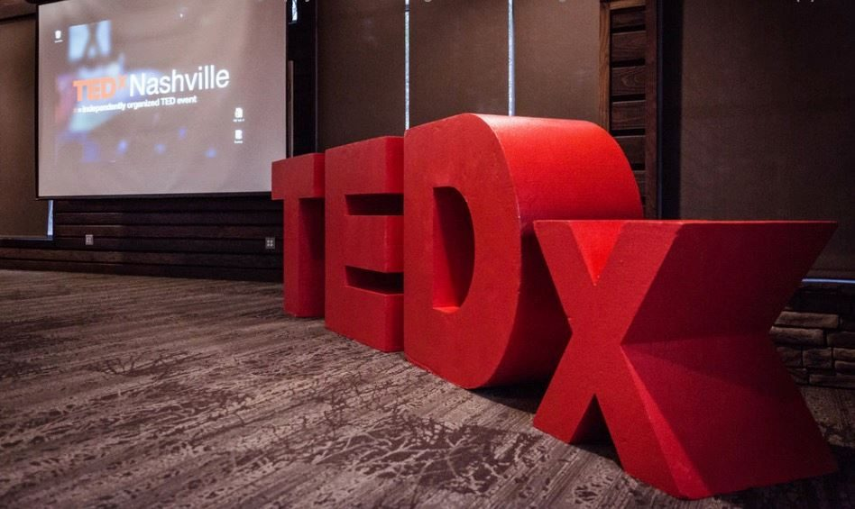
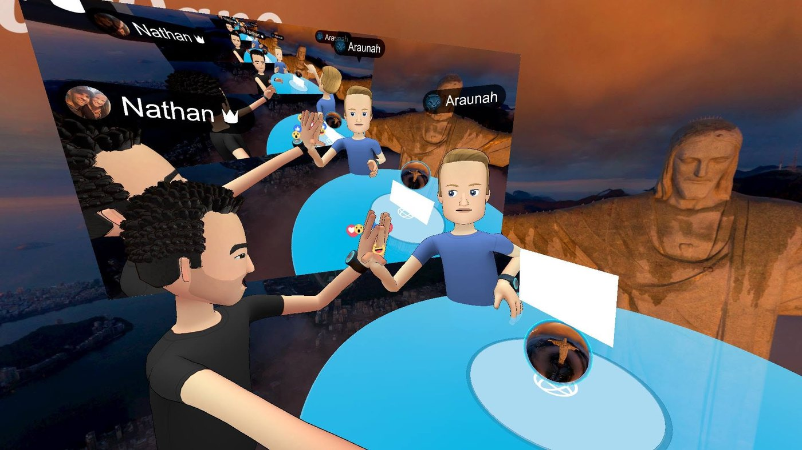
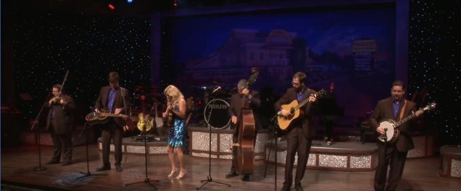
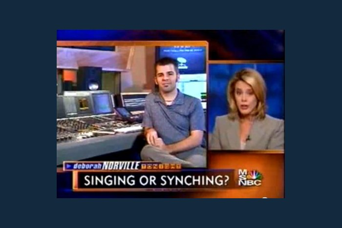
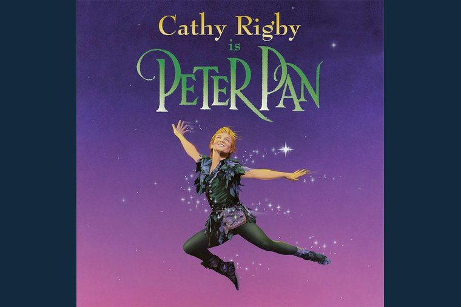
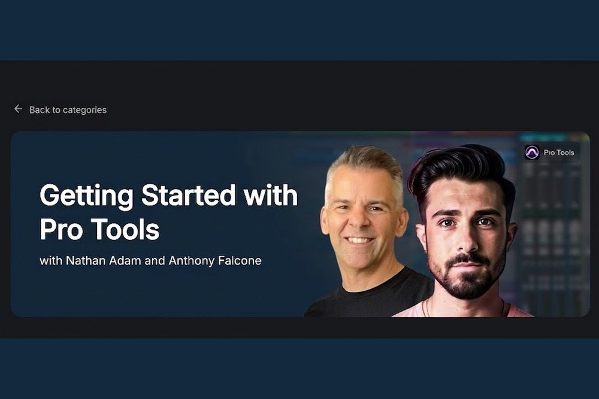
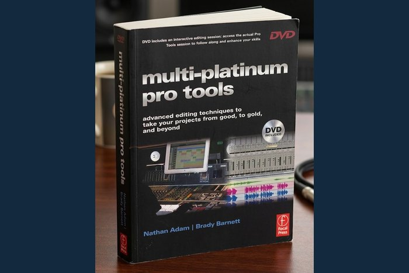
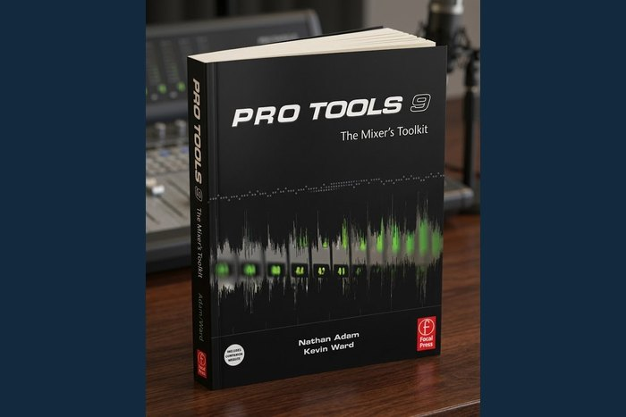
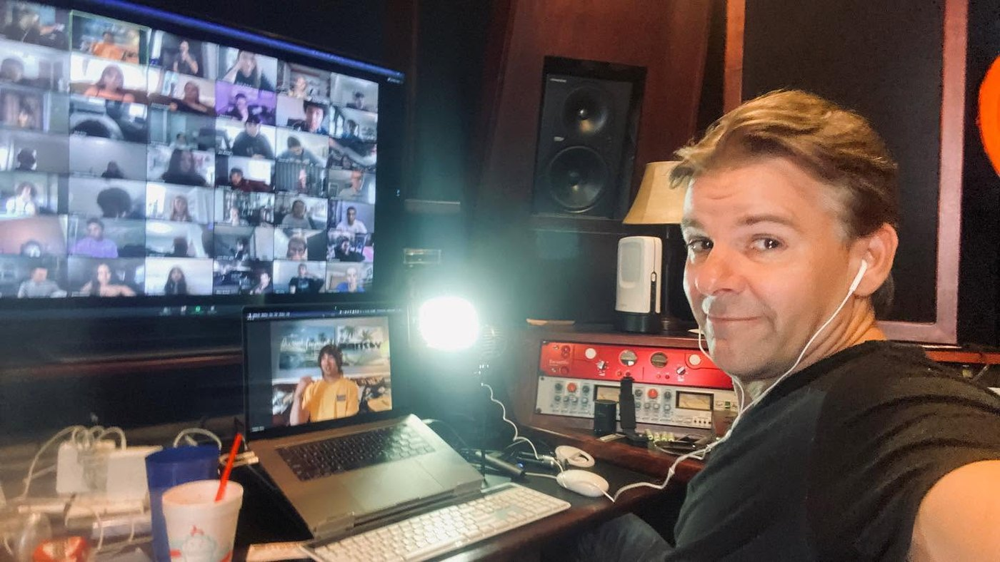

Things I've made
Longer write-ups of individual projects. What each one was, how it got built, and what it taught me, including the parts that didn't work. The credits page is the one-line version of this same list. This is the version with the story still in it.
Film, video and production
-

Cost of Valor
AI-powered filmmaking · Belmont University · 2026Two AI-generated trailer reels bringing a Vietnam veteran's account of Operation Lam Son 719 to the screen, plus an honest account of where the tools broke.
-

TEDxNashville video production
Producer and editor · TEDxNashville board memberThirty-four speakers produced and edited, three of them picked up by TED.com. Every published talk is embedded on the page.
-

Live from Virtual Reality
ProducerA 2017–2018 Facebook Live series produced inside Facebook Spaces, as an avatar, in a room that didn't exist. Also why buying the hardware early counts as a research method.
-

Presleys' Country Jubilee
Post producer and editor · RFD NetworkEpisodes 1 through 142 of a weekly country variety show, broadcast in thirteen countries to about half a million people a week.
-

Tonight with Deborah Norville
Producer and editor · MSNBCThe engineer MSNBC put on camera when the country decided pitch correction might be cheating. The same segment now gets made about AI.
-

Cathy Rigby is Peter Pan
Recorded and mixed the music and orchestra · BransonRecording an orchestra that has to sound like an orchestra in that room, at that volume, every night, without anyone noticing.
Teaching and curriculum
-

GRAMMY Camp
Audio engineering faculty · GRAMMY Museum · 2009 to nowFifty-plus camps across Los Angeles, New York and Nashville, and the two online curricula I wrote for students who couldn't get to one.
-

M.A. in Media & Entertainment Industries
Graduate program · Belmont University · launched 2025A one-year hybrid master's degree built so working professionals don't have to quit their jobs to get one.
Instructional video and courses
-

Gibson's Learn & Master Guitar
Producer, videographer and editor · Legacy Learning SystemsTen discs and fourteen hours, shot and edited start to finish. A guitar course in a box that reached more than 100,000 students, made when the only way to send a lesson to a stranger was to ship it.
-
Multi-Platinum.com
Co-founder · 50+ courses producedOne of the first online training companies in music production, built to open a door that in Nashville only opened if you already knew somebody.
-

Getting Started with Pro Tools
With Anthony Falcone · LANDR CoursesThe same subject as the books, in the format that replaced them, and the one place every format has failed in exactly the same way.
Writing and research
-

Multi-Platinum Pro Tools
With Brady Barnett · Focal Press, 2006Advanced editing, pocketing and autotuning. The techniques every Nashville session was already using and almost nobody had written down.
-

Pro Tools 9: The Mixer's Toolkit
With Kevin Ward · Focal Press, 2011The second book, on the stage after the edit, written for the release that finally untethered Pro Tools from its own hardware.
-

Teaching audio through a pandemic
Doctoral dissertation · Tennessee State University, 2022What audio faculty actually did when the equipment stayed in the building and the students went home, as opposed to what the reports said they did.
Wondering which half of your own work is at risk?
Ten questions about how you actually get paid, and my honest read on what's exposed and what isn't. No score, because a score would be a number I made up.